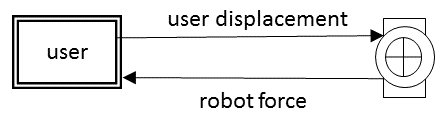
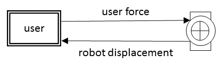

There are two distinct control strategies in classical haptic devices : impedance control and admittance control.
As the saying goes in set theory, the world consists of bananas and non-bananas. Almost all haptic devices use impedance control, and almost none of them use admittance control. The present text is partly an effort to restore the balance.
impedance control
Impedance control is the easy one. It uses the motor torque to directly control the force at the end effector. It is easier to implement in the sense that it does not use a force sensor. Mechanically though, it is delicate.
admittance control
Admittance control is in many ways a "dual" to impedance control. The advantages of the one are the disadvantages or the other, and vice versa. Admittance control is mechanically undemanding and robust, but it requires a delicate force sensor, and careful attention to control.
The two are also mirror images in their software implementation. The usual view is one of "opposite causality" :
- in impedance control, the user inputs a displacement to the device, and the device responds with a force.
- in admittance control, the user inputs a force to the device, and the device responds with a displacement.
The block diagrams in figure 4.1 show the idea. We will have something to say about this view of things, but for now it is the traditional one.


Figure 4.1 : Causality in impedance control ( left ) and admittance control ( right ).
The duality between impedance control and admittance control follows from the mirroring in the roles of the physical and the virtual world. In admittance control, the ideal control loop is the one in the virtual world. The imperfect, delayed powered loop is on the physical environment. In impedance control, the contact with the physical world is direct and almost trivial, and the loop delay is in the transfer from the device state to the virtual world.
impedance control
Impedance control is the better option in the following cases :
- small, low-cost devices.
- safe and light passive movements.
- physical contact with hard surfaces.
admittance control
Admittance control is the paradigm of choice in the following cases :
- robust devices ( rehab, manufacturing )
- rendering hard virtual ( or remote ) surfaces.
Admittance control occupies a niche in the haptics world. It is particularly suited to the following applications :
- force sensitive handling of large loads.
- assistive robotics for stroke rehab.
- remote master-slave operations.
- haptic VR display of stiff environments.
This has strong implications for device design. Impedance control can only be used in devices which have very low mechanical friction. They are typically driven by very light motors with capstan cable drives. Forces delivered are typically low. This limits the use to small devices.
Admittance control by its very nature eliminates the device's own friction. This allows robust devices, with gearboxes and leadscrews, large workspace, and the potential to support the user.
The downside is that such machines can be unsafe. Table 4.1 summarizes the main points.
| impedance | admittance | |
| low cost | + | |
| low mass | + | |
| safety | + | |
| stable on user and environment | + | |
| mechanically robust | + | |
| large workspace | + | |
| zero friction | + | |
| ( rendering ) high mass and stiffness | + | |
| crisp master-slave control | + | |
| man amplifier ( exoskeletons etc. ) | + |